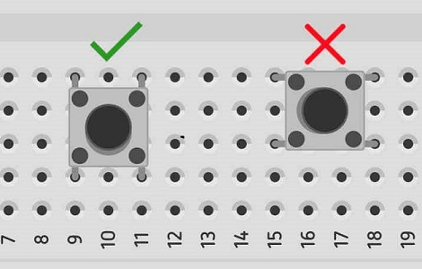

En nuestra misión anterior, le dimos "voz" al Arduino para que controlara un LED. Ahora, le daremos "oídos". Aprenderemos a usar un pulsador, un componente fundamental que permite al usuario interactuar con el circuito. Haremos que nuestro Arduino reaccione a nuestras órdenes.
🧠 Protagonista de Hoy: El Push Botton
Un pulsador es un interruptor momentáneo. Cuando lo presionas, cierra un circuito y deja pasar la corriente. Cuando lo sueltas, se abre de nuevo. El reto es que, cuando el botón está abierto, el pin de Arduino queda "flotando", sin un estado claro. Para solucionar esto, usamos una resistencia PULL-UP, que mantiene el pin en estado ALTO (HIGH) por defecto, y al presionar el botón (conectado a GND), lo llevamos a BAJO (LOW). Afortunadamente, ¡Arduino tiene una resistencia PULL-UP interna que podemos activar por software!

🧠 El Código: Leyendo el Mundo Exterior
Este código introduce la lectura de una entrada digital y la toma de decisiones con una estructura `if/else`.
/*
* Misión 02: Controlar un LED con un Pulsador
* Descripción: Enciende un LED mientras se mantiene presionado un botón.
* Por: Profe Campos
* CECyTEM 05 Guacamayas
*/
// --- PINES ---
const int pinBoton = 2; // Pin donde conectamos el botón.
const int pinLed = 13; // Pin para el LED.
// --- VARIABLES ---
int estadoBoton = 0; // Variable para guardar si el botón está presionado o no.
void setup() {
pinMode(pinLed, OUTPUT);
// Configuramos el pin del botón como ENTRADA y activamos la resistencia PULL-UP interna.
// Ahora, el pin leerá HIGH por defecto, y LOW solo cuando se presione el botón.
pinMode(pinBoton, INPUT_PULLUP);
}
void loop() {
// Leemos el estado del pin del botón y lo guardamos en nuestra variable.
estadoBoton = digitalRead(pinBoton);
// Tomamos una decisión:
// SI el estado del botón es BAJO (LOW)...
if (estadoBoton == LOW) {
digitalWrite(pinLed, HIGH); // ...entonces encendemos el LED.
} else { // SI NO (si es cualquier otra cosa, o sea, HIGH)...
digitalWrite(pinLed, LOW); // ...entonces apagamos el LED.
}
}
🔌 Manos a la Obra: El Circuito
Construiremos un circuito donde al presionar un botón, se encienda un LED. Gracias a la resistencia PULL-UP interna, el cableado es muy limpio.
Diagrama del Circuito 2

💡 Conceptos Clave de la Misión
- Pull-up / Pull-down: Resistencias usadas para asegurar que un pin de entrada tenga un estado lógico definido (HIGH o LOW) cuando no está activo.
- INPUT_PULLUP: Configuración de Arduino que activa una resistencia interna conectada a 5V, simplificando el cableado.
🚀 ¡Inténtalo Tú Mismo! (Retos)
- Modo Inverso: Haz que el LED esté encendido por defecto y se apague SOLO cuando presionas el botón.
- Botón de Pánico: Añade un buzzer al circuito y haz que, al presionar el botón, el LED parpadee rápidamente y el buzzer suene.
- Modo Interruptor (Toggle): Este es un reto avanzado. Haz que al presionar el botón una vez, el LED se quede encendido, y al volver a presionar, se apague. ¡Como un interruptor de luz!